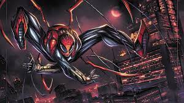

Superior Spiderman
Después de la muerte de Peter Parker en el clímax de la historia de "Dying Wish" en Amazing Spider-Man # 700, Doctor Octopus ha implantado su mente en el cuerpo de Peter Parker, decidido a probarse como el "Superior" Spider-Man al ser ambos un mejor superhéroe y persona de lo que Parker podría ser. Octavius gana la aclamación pública cuando derrota a los Seis Siniestros. Desconocido para Otto, inconscientemente lo detiene la conciencia de Parker que todavía existe dentro de su cuerpo, enterrada debajo de la de Octavius, con la intención de detener al villano y reclamar su vida. Peter demuestra ser incapaz de influir en Octavius de la más mínima manera. Otto involuntariamente se hace compartir el amor genuino de Peter por Mary Jane Watson, y la aleja por su propia seguridad.
Cuando resurge su antiguo compañero siniestro Buitre, Octavius intenta convencer a su viejo amigo de que abandone el crimen. Al descubrir que el Buitre emplea a niños como secuaces, Otto brutalmente derriba al Buitre, cegándolo en el proceso. Los duendes restantes del buitre son capturados por el Duende Verde.Con su reputación despiadada creciendo, Octavius se enfoca en una mayor eficiencia, desarrollando miles de "Spider-Bots" que patrullan la ciudad para él mientras regresa a la universidad como Parker para completar su doctorado, a su vez creciendo cerca de su tutora Anna Maria Marconi. Otto localiza al asesino Masacre que escapó, a quien luego ejecuta públicamente para evitar más asesinatos.